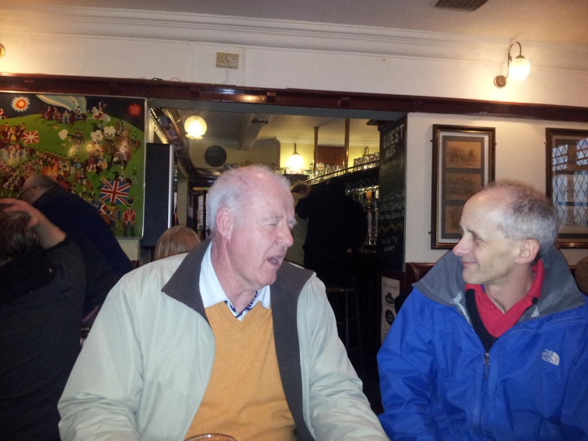
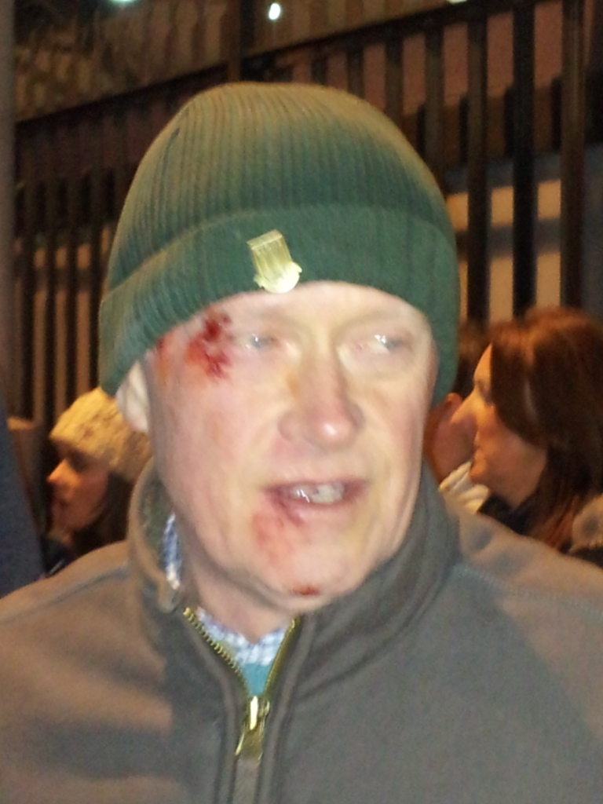

A Most Memorable Trip (especially for Mid-week Tone)
Richee, Craigee and Sean unfortunately dropped out of this one. Craigee had to attend a funeral in London, Richee has been transferred to the United Arab Emirates for a few months, and Sean was flogging Molly again in Australia,,, as he so often does.
There were still 12 scouse gits left though:
Yupmeister, Silver Bear, Mid Week Tone, 2 Pie R Dave Semi-Colon, Jaycee, Keithee, Granpop Bill, Stubmeister, Ali Gee, R G Bargee, Corky and Pedro.
It was our first trip to Liverpool’s Beer Festival and to get there we had to go through the process of applying for the tickets in pairs and wait for the ridiculous lottery procedure to be completed to see if we would actually receive any tickets. Amazingly, we were all successful.
On the way to Stoke Station it was impossible to pass the best butty shop in Stoke without dropping in. Even Silver Bear dropped in with the same thought in mind.
We gathered in the station foyer before making our way across to platform 2. It was Granpop Bill’s first outing since his recent operation to clear a blockage. However, there was no sympathy whatsoever from Jaycee who said he’d always thought he was full of shyte…….
A virgin train with a hundred carriages quietly drifted into the station and gently slipped away as a boneshaker with just 3 creaking carriages trundled in. Yes, it was our train. There wasn’t much room around the table but we squeezed in with a struggle. Luckily for Granpop Bill he was able to occupy 2 seats and stretch out.
Ali G joined us at Kidsgrove and handed a map over to Pedro just in case he should get lost again. As if!

2 Pie R Dave Semi-Colon, Corky and Keithee were waiting at Crewe for us as we arrived. Spotting Pedro with a 50’s trilby Keithee remarked that he hadn’t realised it was fancy dress.
The change at Crewe was around 25 minutes so shelter from the bitter cold was soon spied in the waiting room. A fruity Gatorade was spotted !!
‘How’s it going?’, sparked a flurry of admissions of ailments by the gathering, and included Jaycee’s knee, Keithee’s knee, Bill’s blockage, Stubby's shoulder and Pedro’s kidneys. ‘I need to have a urine test’, Pedro declared. ‘Ha, that’ll just be the doctor taking the p...’ retorted Keithee.
From Lime Street it was only 10 minutes to the cathedral but once there we struggled to locate the entrance to the crypt until we font it. Who came up with that one ?
RG Bargee finally arrived and joined us for the final half an hour or so before we were ushered out at 4pm. The general feeling was that it had been a good experience but that the Derby Roundhouse topped it.
Once inside the wonderful brick arched crypt we bought our vouchers and looked around seeking out old favourites and unusual brews. In alphabetical order Silver Bear headed for the letter ‘I’ but sadly there was no Ibstock Brick available. 2 Pie R Dave Semi-Colon was also disappointed, unable to find any Stella. ‘Did you see the rat?’ he asked a startled Yup, who subsequently realised he was referring to the Rat ales next to the ‘S’ brews and not the crypt rat.
There was food available in adjacent rooms with the foot long hot dogs attracting most attention. Jaycee struggled with his, having never had a sausage that big before in his grasp.
Tony sussed out the pricing strategy, which was also noted in the handout if we’d have read it; and realising that all beers of 4.5% or above were 50p dearer, he hunted out any that were 4.4%.
Jaycee announced that he would be buying some bottles of wine at the Indian to celebrate his recent 60th. ‘It’s no wonder he’s still working’, Keithee said, ‘just so he can pay for our party!’
There were many pieces of memorabilia, pictures and references to JL and a warning sign stating that anyone found with drugs will be reported to the police. There were one or two nervous shuffles as Rennies were pushed deeper into pockets.

There were several strange ales available including Cosmos and a Winter Warmer at over 7% which didn’t go down well with Corky. ‘It’s rank’, he reported. Should have had the Caines youth...
2 Pie R Dave Semi-Colon appeared to be in a trance, maybe a drunken trance, as a picture of a hot air balloon was passed around on Granpop Bill’s touch phone. Jaycee couldn't look and shut his eyes.
Click here to see the hot air balloon
At 5pm we waited patiently for Pedro who had started chatting to a couple of strangers before we moved on. We wouldn’t want to leave him behind again ……would we?
The intimidating doorman would only allow 2 people in at a time, or was it four?
The historic Philharmonic not only had an abundance of fine ales but also its own mini beer festival, although it's prices seemed almost double that of the cathedral.
Corky became very attracted to the mini beer festival, falling in love with a Suffolk Blonde or Brunette.
We made it to A Passage to India in Bold Street at 6.15pm as planned and were discretely shown to a table towards the rear of the restaurant where we squeezed into the seats and began ordering.
Several bottles of house red were also ordered and a rousing chorus of Happy Birthday was sang to the owd un. Well done, and Congrats Jaycee.
The food was plentiful and it was probably the first time ever that Granpop Bill had been spotted leaving some of his curry, but to be fair he didn’t want another blockage.
There was a minor debate the following week to determine who had knocked the wine bottle over. Granpop Bill was unanimously given the guilty verdict.
The final bill, excluding the wine which was paid for by Jaycee, (many thanks Jaycee) was £20 each which was duly settled and the final trips to the gents were made.
Keithee couldn't remember paying the bill but the proof is here along with the wine stain !!
In twos and threes we were rushing towards the station to catch our train, when a most memorable trip was made by Mid-week Tone. Somehow he managed to crash into the road, head first, miraculously protecting his free commemorative beer festival glass. Soon to become ‘Anytime Tone’, we were fearful that he might become ‘Never again Tone’ after his wife Chris had seen the state of him.

Pedro is forever telling us to keep our eyes on the road but Tone had taken it quite literally.
Luckily, the birthday boy, Jaycee was on hand to help Mid-week to his feet, accompanied by a couple of friendly scousers in track suits who in other circumstances may have sang ‘she fell over, she fell over’, or ‘you’ll never walk alone’. Thanks must be given to them for not only assisting him to his feet, but also for not nicking his wallet. The watchful eyes of Jaycee made sure of that.
Supported by Jaycee and Yup, Mid-week was assisted towards the station where it was discovered the trains were running late anyway. Typical.
Tone looked even worse for wear the following day but at least he didn't look like this guy to the left !!
Could it be the silver bear?? or is it someone else?? Scroll to the bottom of the page to see who it is.
Eventually, a train appeared and we gratefully climbed on board. Changing at Manchester this time Granpop Bill panicked and searched a couple of carriages looking for his commemorative glass before realising he was sitting on it.
Home at last, and a Most Memorable Trip
Cheers
Yuppers
Next year Derby or Wigan????